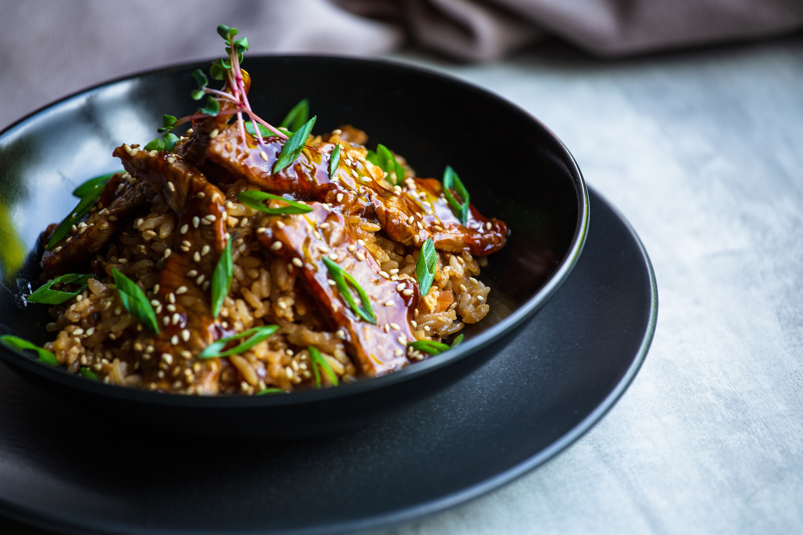

A matte black bowl, set on a matching black plate, is filled with glazed slices of tender meat over savory fried rice. The meat has a glossy, caramelized teriyaki-style sauce and is finished with toasted sesame seeds, thinly sliced green onions, and a delicate sprig of pink-stemmed microgreens rising from the top. The dark dishes contrast with the light gray surface, and a soft, blurred cloth in the background gives the shot a clean, modern feel.